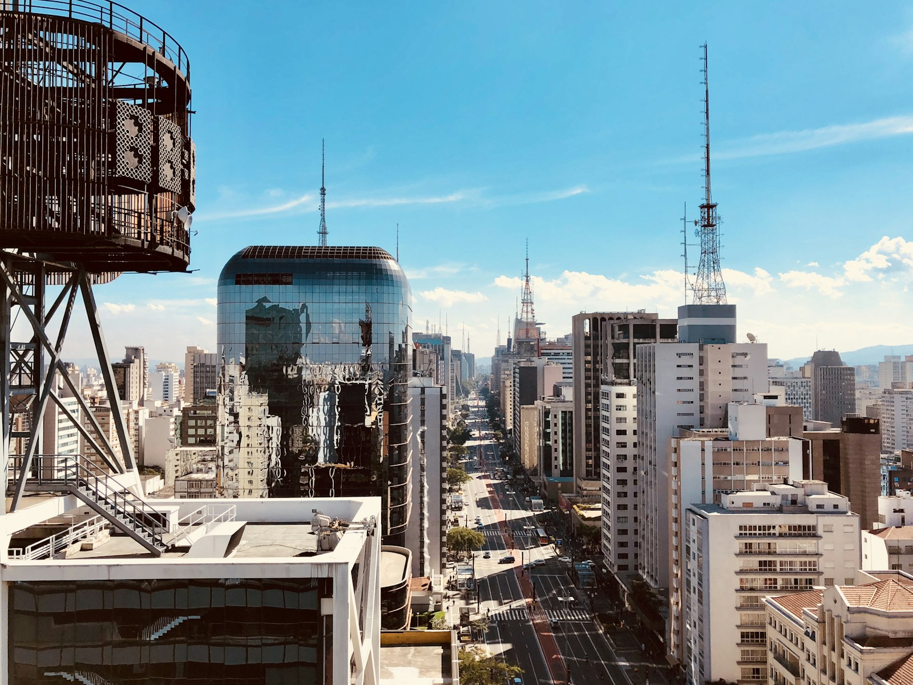
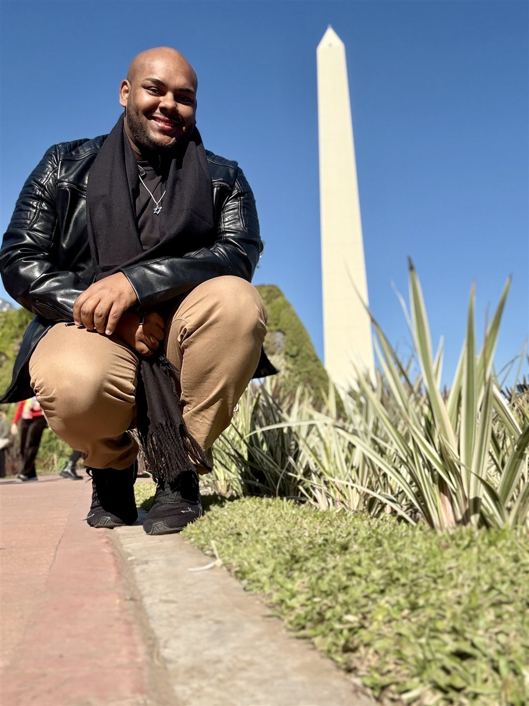
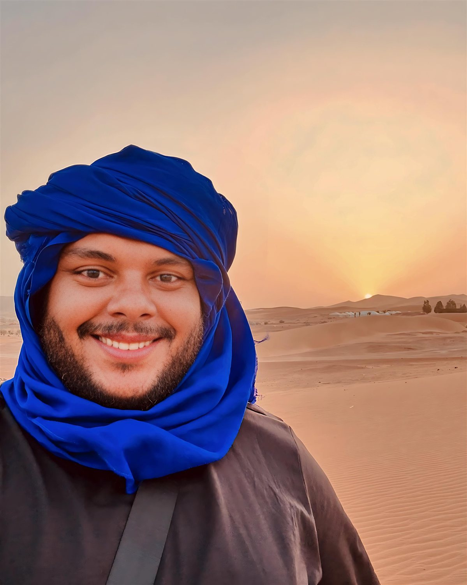

Você me conta
Seus interesses, a data, quem vai com você e o que tornaria esse passeio especial.
Vá além do cartão-postal. Descubra histórias, sabores e lugares que fazem sentido para você, com um guia que ama viver o mundo.

AVENIDA PAULISTA · SÃO PAULOA cidade tem muitos jeitos de surpreender.
Escolha um ponto de partida. O resto, a gente desenha junto.
Cada roteiro é uma proposta inicial. Percurso, duração, acessibilidade e valores são combinados com você.


O mundo ensina.Sou Lucas Pereira, a pessoa por trás da LPS Tours. Viajar me ensinou que a melhor lembrança de um lugar quase sempre começa com uma boa conexão.
Da intensidade da Índia aos encontros pelo Marrocos e pela Europa, das paisagens de Foz do Iguaçu às ruas do Rio: cada vivência trouxe uma nova forma de acolher, escutar e descobrir.
É esse olhar que levo para o seu roteiro em São Paulo. Quero conhecer seus interesses e transformar o seu tempo aqui em uma experiência com significado.
Fotografias reais, memórias minhas.
Um pouco das viagens que fazem parte de quem eu sou.
Índia · Espanha · Portugal · Inglaterra · França · Escócia · Irlanda · Bélgica · Holanda · Alemanha · Polônia · Marrocos
E pelo Brasil: São Paulo, Rio de Janeiro, Gramado, Foz do Iguaçu, Belo Horizonte, Búzios e muitas outras descobertas.
Seus interesses, a data, quem vai com você e o que tornaria esse passeio especial.
Receba uma proposta com percurso, duração, valores e os detalhes do atendimento.
Com a proposta aprovada e a reserva confirmada, é hora de descobrir São Paulo.
Conte um pouco do que você imagina. Eu ajudo a encontrar o caminho.
Atendimento para viajantes individuais, casais, famílias, grupos e visitas corporativas. Solicitar uma proposta não confirma a reserva.
Você pode solicitar um passeio individual, em casal, com a família ou em grupo. O formato é combinado na proposta, conforme o perfil e o número de participantes.
O orçamento considera duração, percurso, tamanho do grupo e serviços necessários. Você recebe os valores e o que está incluído antes de confirmar a contratação.
Esses itens dependem do roteiro. A proposta vai informar o que está incluído, o que é pago à parte e quais reservas precisam ser feitas.
Sim. Conte as adaptações de percurso, ritmo e deslocamento que você procura. Vamos avaliar juntos a estrutura dos locais e as possibilidades antes de fechar o passeio, sem precisar informar diagnósticos.
Alternativas para dias de chuva e condições de remarcação e cancelamento serão apresentadas na proposta, antes da confirmação da reserva.